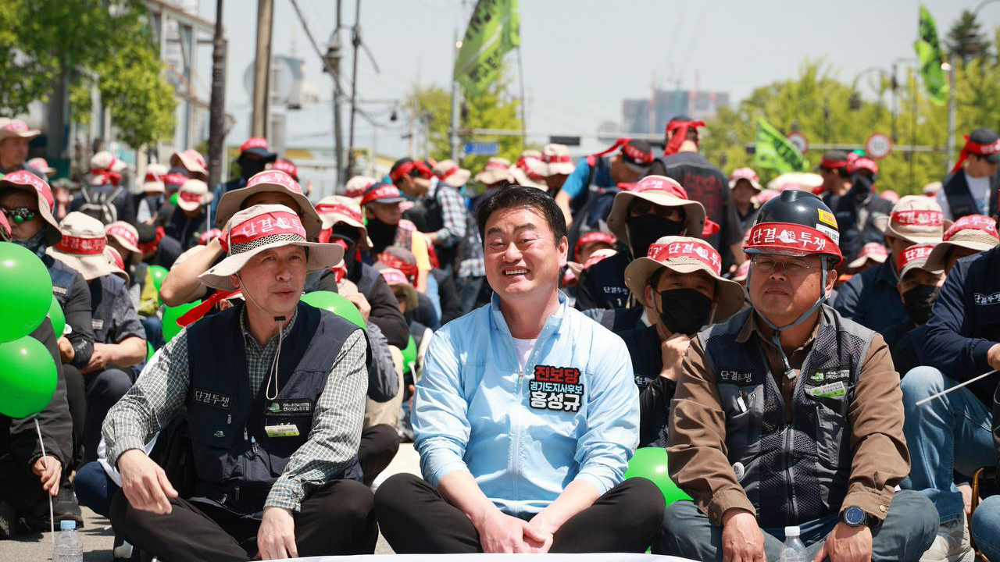
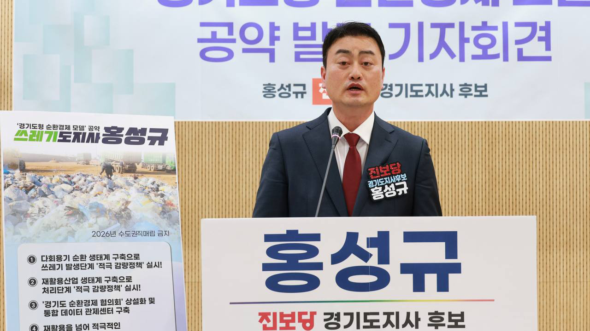
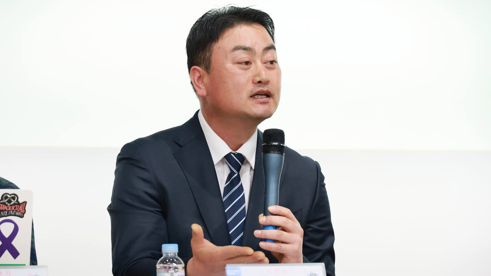
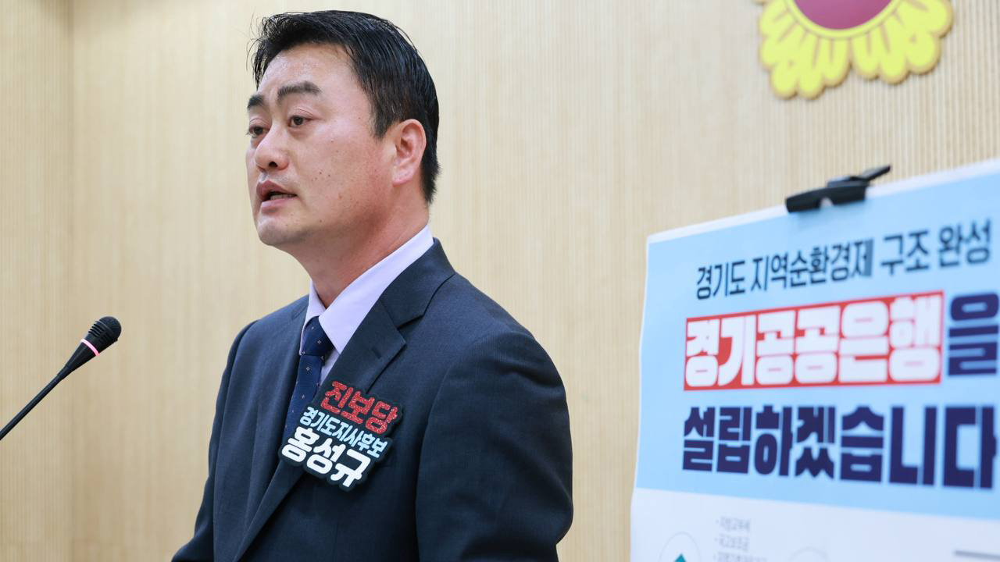
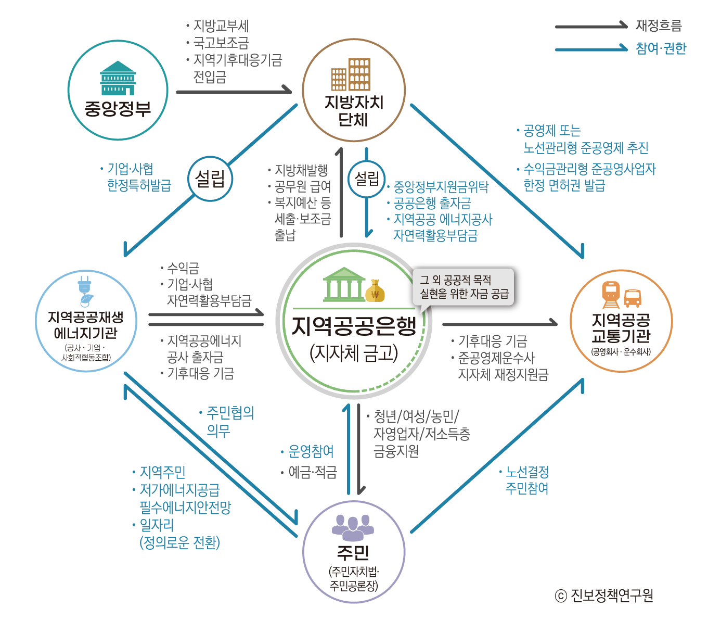
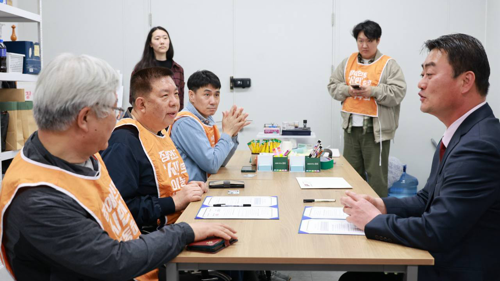

광장의 에너지를 경기도정으로!
사랑하고 존경하는 1,400만 경기도민 여러분, 진보당 경기도지사 후보 홍성규입니다.
내란 세력에 맞서 민주주의를 지켜주신 도민들께 깊은 감사를 드립니다. 우리는 단지 대통령 하나를 바꾸려고 그 추운 겨울 거리에 나선 것이 아닙니다. 첫 번째 탄핵 이후 사회 대개혁을 이루지 못한 결과가 끝내 윤석열 내란 사태로 이어졌습니다. 이번에는 반드시 달라야 합니다. 저는 ‘광장의 후보’로서 ‘광장의 도지사’가 되겠습니다.
일자리·청년 실업·자산 양극화·주거·돌봄 사각지대·교통 및 농촌 문제 등 도민의 삶을 짓누르는 문제들, 그 해답은 결국 ‘공공성의 회복’입니다. 공공이 주도하고 시민의 지지와 민간의 협력을 이끌어내어 행복 공공복지 도시 경기도를 만들겠습니다. ‘노동 존중’은 새로운 경기도정의 단단한 근간입니다. ‘노동부지사’를 임명하여 도정의 처음부터 끝까지 도민과 함께하겠습니다.
거창한 구호가 아닌, 도민의 일상을 실질적으로 바꾸는 진보 정치를 경기도에서 시작하겠습니다. 1,400만 경기도의 변화가 곧 새로운 대한민국의 문을 열 것입니다.
-
출생 및 학력
- 1974년 화성시 출생
- 화성시 팔탄초-발안중, 안양시 안양고 졸
- 서울대학교 공과대학 토목공학과 도시공학전공 입학
- 서울대학교 공과대학 지구환경시스템공학부 졸업
- 서울대학교 대학원 정치학과 졸업 (정치학 석사)
-
주요 약력
- 현)진보당 대변인
- 현)화성노동인권센터 소장
- 현)전국학교비정규직노동조합 경기지부 교육위원
- 현)민주노총 성평등강사 (고용노동부 직장내성희롱예방교육 강사)
- 전)민중당 공동대표 겸 사무총장
- 전)민중당 경기도지사 후보 (2018년 제7회 전국동시지방선거)
6대 공약
더 나은 내일을 위해, 모두를 위한 경기도
| 구분 | 공약 |
|---|---|
노동 |
‘노동부지사’ 임명, 노정교섭 정례화, 쪼개기 계약 및 초단시간 노동 근절 |
돌봄 |
경기도가 책임지는 ‘공공통합돌봄’ 실현! |
경제 |
‘경기공공은행’ 설립으로 지역경제 선순환 모델 구축 |
환경 |
‘경기도형 순환경제’ 모델로 수도권 쓰레기 문제 근본 해결 |
인권 |
‘차별금지조례’ 제정, 누구도 소외되지 않는 ‘평등한 경기도’ |
교통 |
경기도형 ‘월 3만원 청년·서민 프리패스’ 도입 |
노동
‘노동부지사’ 임명, 경기도가 ‘일자리’와 ‘안전’ 모두 챙기겠습니다.

-
초기업교섭·노정교섭 정례화, 공공부문 쪼개기 계약 및 초단시간 노동 근절
-
돌봄·의료·복지·기후 등 사회 필수 공공일자리 확대
-
위험의 외주화 금지, 폭염·한파 등 재난시 노동자 ‘작업중지권’ 보장
환경
‘경기도형 순환 경제 모델’로 쓰레기 문제 근본 해법을 만들겠습니다.

-
다회용기 순환 생태계 구축으로 쓰레기 발생단계 ‘적극 감량정책’ 실시
- 모든 공공시설 ‘일회용 컵 제로’ 의무화
- 모든 공공행사 다회용기 비용 예산 필수 반영
- 일정 규모 이상의 민간 사업장, 학교, 영화관 등에 다회용기 사용 의무화 가이드라인 수립
- 공공·민간 장례식장에 다회용기 식기 세척 시스템 지원
- 일회용품 규제로 경영 부담 겪는 카페·식당 등 소상공인 지원
- 배달 플랫폼과 다회용기 사용 협약 체결
-
재활용산업 생태계 구축으로 처리단계 ‘적극 감량정책’ 실시
- 현재의 ‘최소 대응 선별 시스템’에서 ‘최대 적극 대응 선별 시스템’으로 전환
- ‘경기도형 공공 선별장’ 확대 구축
- 유리·캔·플라스틱·종이류 등 재활용 산업 경기도 내 적극 육성 및 재활용품목 확대
-
‘경기도 순환경제 협의회’ 상설화 및 통합 데이터 관제센터 구축
- 정책 결정의 일관성과 지역 간 갈등 조정을 위한 의사결정 기구 운영
- 경기도 시·군 경계를 넘어선 인프라 공유를 통해 규모의 경제 달성
- 매년 교부되는 폐기물처분부담금을 ‘경기도 순환경제 활성화 기금’으로 편성
-
재활용을 넘어 적극적인 ‘재사용 수리’ 경기도!
- ‘공공 수리센터’ 조속 확대 설치운영
- 모든 기초자치단체 조례 제정 및 수리센터 지원
- 도민의 적극 참여 기반으로 ‘수리활동지원단’ 구성 및 운영
돌봄
경기도가 주도하는 ‘공공통합돌봄’으로 ‘돌봄국가책임제’를 실현하겠습니다.

-
‘돌봄정책위원회’ 설치
- 정책 및 실행계획 수립
- 돌봄노동자, 돌봄자도 함께 참여 (참여 결정권)
- 광역 및 기초자치단체에 모두 설치
-
경기사회서비스원 대폭 확대 및 강화
- 경기도형 통합돌봄 모델의 지휘센터
- 현행 ‘노령·의료’에 치우친 영역 다변화
-
광역 및 기초자치단체별 조례로 제도화
- 돌봄3법(돌봄기본법, 돌봄노동자법, 돌봄자지원법)의 취지에 기반
- 광역, 기초자치단체, 사업장의 책임 명시
- 돌봄차별 금지: 돌봄으로 인해 채용, 임금, 근속, 평가 등 전 영역에서 차별 및 기타 불이익 대우 받지 않도록
-
돌봄시설 직영화
- 돌봄제공기관 확대 및 직접 운영 (광역 및 기초)
- 좋은 돌봄의 시작은 돌봄노동자의 가치 인정과 노동권 보장에서 시작
-
‘돌봄자 지원’ 선제적 시행
- 시급한 기초자치단체 시범사업부터
- 돌봄자 지원센터: 자조모임, 심리상담, 돌봄교육 등
- 치매가족지원센터
- 돌봄크레딧 / 돌봄자 유급휴가 및 휴직 지원
- 가족돌봄 아동·청소년·청년 지원 확대
경제
경기도 경제 선순환 구조 완성, ‘경기도형 공공은행’을 설립하겠습니다.

-
순환경제, 공공돌봄, 재생에너지, 공공교통 등 공공서비스 확충에 투자
-
소상공인과 청년, 저소득층에 실질적인 금융안전망 제공
- 청년들에게 학자금 저금리 대출
- 소상공인과 10인 미만 사업장의 사회보험 가입과 연계한 금리 인센티브 제공
-
사회연대경제 사업 활성화에 기여
- 사회적경제, 협동조합 중심의 대출 확대
-
도내 상호저축은행, 새마을금고, 신용협동조합 등 서민금융기관 협력 및 지원

- 자본금을 경기도, 지방공기업, 지방출자 출연기관 그리고 시민이 함께 출자하고, 시민사회가 의사결정의 주체가 되는 공공은행입니다.
- 수익성보다 공공성을 우선하고, 단기이익이 아니라 장기 지속성을 보며 지역에 기여하는 특수은행입니다.
- 경기도의 돈을 경기도에서 순환시키는 지역경제의 혈맥입니다.
인권
‘차별금지조례’ 제정, 누구도 소외되지 않는 평등한 경기도를 만들겠습니다.

-
성평등 정책의 총괄 책임자로 ‘성평등 부지사’ 임명
- 경기도 성평등 정책 강화를 위한 성평등 부지사 임명
- 경기도 31개 시군에 성평등정책관을 두어 하나의 추진체계로 운영
-
‘성평등 임금공시제’ 확대
- 기업과 공공기관의 성별 임금 수준과 고용 현황 공개
- 노동자의 임금정보공개청구권 신설
-
‘경력보유 여성’ 맞춤형 공공일자리 보장
- 육아 및 돌봄과 병행할 수 있는 노동시간 맞춤형 공공 일자리 제공
- 경력보유 여성 노동권 보장(프리랜서, 플랫폼, 단시간노동)
- 최소 생활노동시간 보장제 도입
-
‘젠더폭력통합대응센터’ 31개 기초자치단체로 확대
- 신고, 상담, 피해자 지원을 한 번에 지원하는 통합운영 체계
- 디지털성범죄 예방, 피해자지원 기능 강화
- 1인 여성 자영업자 안전 지원
- 학교, 직장 내 의무교육 확대 및 강화
-
‘혐오 표현 없는 경기도’ 혐오 표현 예방 및 대응
- 혐오 표현 매뉴얼 제작 보급
- 예방교육 확대(학교, 공공기관, 유관기관)
- 혐오 표현 정의와 규제
-
차별없는 세상, ‘차별금지 조례’ 제정
- 성별, 장애, 성적 지향이나 출신 때문에 일자리와 기회를 잃고 노동조건에서 불이익을 겪지 않도록 차별금지조례 제정
- 다양한 가족구성원 보장
- 이주민 인권보장 제도의 제도적 기반 강화
- 장애인 이동권, 교육권, 노동권리보장 제도화
보도자료 · 성명
- 불러오는 중...
홍성규를 후원해주세요! 후원정보 입력
일상을 바꾸는 진보정치의 효능감을 우리 도민들께서 느낄 수 있도록, 쉬지 않고 달리겠습니다.
우리은행 1005-104-916540
(경기도지사예비후보자 홍성규후원회)
후원 안내
- 연말정산 시 10만원까지 전액 세액공제 가능합니다.
- 10만 원 초과 시 15~25% 세액공제를 받을 수 있습니다.
- 1회 10만 원, 연간 120만 원 이하는 익명으로 후원 가능합니다.
- 1인 최대 500만 원까지 후원할 수 있습니다.
- 외국인, 국내 외 법인, 단체, 당원이 될 수 없는 공무원은 후원하실 수 없습니다.